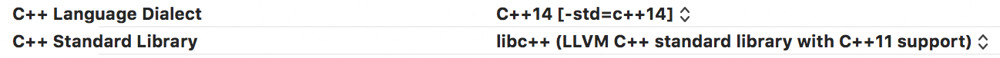
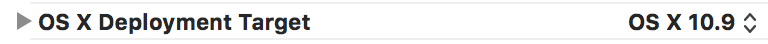
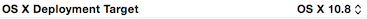
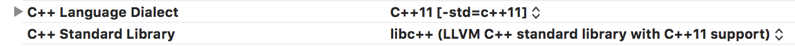

New features of the previous API versions
This outline summarizes what was new in the API of the former Archicad releases.
- New API features in Archicad 25
- New API features in Archicad 24
- New API features in Archicad 23
- New API features in Archicad 22
- New API features in Archicad 21
- New API features in Archicad 20
- New API features in Archicad 19
- New API features in Archicad 18
- New API features in Archicad 17
- New API features in Archicad 16
- New API features in Archicad 15
- New API features in Archicad 14
- New API features in Archicad 13
- New API features in Archicad 12
- New API features in Archicad 11
- New API features in Archicad 10
- New API features in Archicad 9
- New API features in Archicad 8.1
- New API features in Archicad 8
New API features in Archicad 25 
-
System requirements changes
- macOS system requirements have changed; we support macOS 10.15 and above.
- Switch to Visual Studio 2019 (v142 toolset) on Windows platform.
-
Technical changes
- ACAPI_Property_CreatePropertyDefinition: Returns error if the definitionType of the parameter is not supported by the function instead of ignoring its value.
- ACAPI_Property_ChangePropertyDefinition: Returns error if the definitionType of the parameter is not supported by the function instead of ignoring its value.
- ACAPI_Property_CreatePropertyGroup: Returns error if the groupType of the parameter is not supported by the function instead of ignoring its value.
- ACAPI_Property_ChangePropertyGroup: Returns error if the groupType of the parameter is not supported by the function instead of ignoring its value.
- UC261, LineType UserControl no longer allows adjustable line height; has a new field (scaledness) for the header view; and a new named separator cell type (CF261_HEADER)
-
New functionality
- Add-ons can now define and register their own custom commands. Please see below the related structures and functions.
- The new component API makes it easier to query components of an element, and you can access the definitions and values of their properties.
- Introduced the Structural Analytical Load Case, Load Group and Load Combination. Please see below the related structures and functions.
- Send and Receive operations are available now via the API with the new Teamwork API functions.
- New HTTP network client communication module is available for Add-Ons. For details please check the CommunicationClient_Test example.
- A new 3D model rendering control was introduced. It can display any
Modeler::Model3Dmodel, and is capable of handling custom camera events on mouse interactions. See the Model3DViewer_Test Add-On in the examples. - The mapping of the hotlink proxy elements and source elements can be retrieved.
-
Modified/new structures
-
Non-localized enumeration values in API Properties
-
API_PropertyValue
singleEnumVariantandmultipleEnumVariantmembers have been removed.- In case of enumeration values the keyVariant of the selected enum value is now stored in the
singleVariantorlistVariantmember instead. - If you need to, you can retrieve the displayVariant or nonLocalizedValue of the enumeration from the property definition's
possibleEnumValuesmember based on the stored keyVariant. (However if you need only a display string, you can still use the ACAPI_Property_GetPropertyValueString function without further modifications.)
-
API_SingleEnumerationVariant
- No longer used in API_PropertyValue (see above).
nonLocalizedValuemember added.
- API_MultipleEnumerationVariant ⇒ this structure has been removed. (No longer used anywhere because it's not used in API_PropertyValue any more (see above).)
-
API_PropertyValue
- API_AddOnCommand ⇒ new structure describing the Add-On commands.
- API_AddOnCommandExecutionPolicy ⇒ new enum describing the Add-On commands execution policy.
- API_SubElement ⇒ Renamed API_SubElemMemoMarker to API_SubElement.
- API_SubElementType ⇒ Renamed API_SubElemMemoMarkerType to API_SubElementType.
- API_Favorite ⇒ The
subElementsmember was introduced, contains the subelements of theAPI_Favorite. - API_OverrideStyle ⇒ The
cutFillBGPen, coverFillBGPen, draftingFillBGPen, cutSurfaceTypeanduncutSurfaceTypemembers type are changed toAPI_OverriddenAttributeOrRGB. Two new members are added that control the hiding of contour lines:hideCutContoursandhideUncutContours. - API_OverrideRuleStyle ⇒ The
fillBackgroundPenOverrideandsurfaceOverridemembers type are changed toAPI_OverriddenAttributeOrRGB. New functionality added to control contour visibility:overrideContoursenableshiddenContoursof typeAPI_OverriddenSurfaceType. - API_GeoLocation ⇒ new structure for managing the Geo Location settings of the project..
- API_GeoReferenceData ⇒ new structure that holds the georeferencing parameters associated to the project.
- API_AnalyticalLinkGeometry ⇒ The
curvesmember was introduced, describes the joining curves of the 2D link. - API_CalcRulesPrefs ⇒ new conditional element rule data structure.
- API_ConditionalElementRule ⇒ new structure describing a conditional element rule.
- API_ConditionalElementPropertyTypeID ⇒ new enum describing the property type in a conditional element rule.
- API_AnalyticalMemberPartRef ⇒ The data which described custom vertex and ratio edge type, it has been moved to separate structures.
- API_AMPartRefCustomVertexData ⇒ Sub-structure of API_AnalyticalMemberPartRef, it describes a vertex when the type requires it.
- API_AMPartRefRatioEdgeData ⇒ Sub-structure of API_AnalyticalMemberPartRef, it describes ratios when the type requires it.
- Components
- API_ComponentID ⇒ new structure that identifies a component.
- API_ElemComponentID ⇒ new structure that identifies a component of an element.
- API_ListDataID ⇒ API_ComponentID is renamed to API_Obsolete_ComponentID and marked as obsolete.
- API_Obsolete_ComponentType ⇒ API_ComponentType is renamed to API_Obsolete_ComponentType and marked as obsolete.
- API_Obsolete_ComponentRefType ⇒ API_ComponentRefType is renamed to API_Obsolete_ComponentRefType and marked as obsolete.
- Structural Analytical Load Case and Load Group
- API_AnalyticalLoadCase ⇒ new structure that identifies a load case.
- API_AnalyticalLoadCaseActionType ⇒ new structure that identifies an action type of a load case
- API_AnalyticalLoadCaseDuration ⇒ new structure that identifies a duration of a load case.
- API_AnalyticalLoadCaseLoadType ⇒ new structure that identifies a load type of a load case.
- API_AnalyticalLoadGroup ⇒ new structure that identifies a load group.
- API_AnalyticalLoadGroupRelation ⇒ new structure that identifies a relation of a load group.
- API_AnalyticalLoadGroupType ⇒ new structure that identifies a group type of a load group.
- API_IFCClassification ⇒ new
descriptionandlocationmembers for IFC4. - API_IFCClassificationReference ⇒ new
readOnlymember.
- API_Property ⇒
statusmember is introduced
- API_NavigatorItem ⇒
sourceGuidmember is introduced
- API_NavigatorItemTypeID ⇒
API_DrawingNavItemis introduced
-
Non-localized enumeration values in API Properties
-
Modified/new functions
- APIDb_GetHotlinkProxyElementTableID: New function.
- ACAPI_ActionCenter_Check: New function.
- ACAPI_TeamworkControl_SendChanges: New function.
- ACAPI_TeamworkControl_ReceiveChanges: New function.
- ACAPI_TeamworkControl_GetTeamworkProjectDetails: New function.
- ACAPI_TeamworkControl_ReserveElements: New
enableDialogsparameter was introduced to perform silent operations. - ACAPI_TeamworkControl_ReleaseElements: New
enableDialogsparameter was introduced to perform silent operations. - ACAPI_TeamworkControl_GetLockableStatus: The
conflictsparameter returns userIds instead of usernames. Use ACAPI_TeamworkControl_GetUsernameFromId to convert userId to username. - ACAPI_TeamworkControl_ReserveLockable: The
conflictsparameter returns userIds instead of usernames. Use ACAPI_TeamworkControl_GetUsernameFromId to convert userId to username. - ACAPI_TeamworkControl_GetUsernameFromId: Use it to get the username of a user identified by a
shortid in a Teamwork project. - APIDb_SetActualRenovationFilterID ⇒ change the actual renovation filter.
- ACAPI_Property_IsValidValue ⇒ returns true if the value is acceptable for the given definition.
- ACAPI_Install_AddOnCommandHandler
- Components
- ACAPI_Element_GetComponents ⇒ new function that retrieves all components of an element.
- ACAPI_ElemComponent_GetPropertyDefinitions ⇒ new function that retrieves all property definitions of a component.
- ACAPI_ElemComponent_GetPropertyDefinitions ⇒ new function that retrieves the value of a property.
- ACAPI_ElemComponent_GetPropertyDefinitions ⇒ new function that retrieves the values of properties.
- ACAPI_ElemComponent_GetPropertyValuesByGuid ⇒ new function that retrieves the values of properties by guid.
- ACAPI_Element_GetComponents_Obsolete ⇒ ACAPI_Element_GetComponents is renamed to ACAPI_Element_GetComponents_Obsolete and marked as obsolete.
- APIEnv_IsSurveyPointVisibleID, APIEnv_SetSurveyPointVisibilityID ⇒ new Environment functions to manage the visibility of the survey point.
- Structural Analytical Load Case and Load Group
- ACAPI_AnalyticalModel_GetAnalyticalLoadGroups ⇒ new function that retrieves all existing load groups.
- ACAPI_AnalyticalModel_GetAnalyticalLoadGroup ⇒ new function that retrieves a load group by guid.
- ACAPI_AnalyticalModel_CreateAnalyticalLoadGroup ⇒ new function that creates a load group.
- ACAPI_AnalyticalModel_DeleteAnalyticalLoadGroup ⇒ new function that deletes a load group by guid.
- ACAPI_AnalyticalModel_GetAllAnalyticalLoadCases ⇒ new function that retrieves all existing load cases, regardless of their group.
- ACAPI_AnalyticalModel_GetAnalyticalLoadCases ⇒ new function that retrieves all load cases of a load group.
- ACAPI_AnalyticalModel_GetAnalyticalLoadCase ⇒ new function that retrieves a load case by guid.
- ACAPI_AnalyticalModel_CreateAnalyticalLoadCase ⇒ new function that creates a load case.
- ACAPI_AnalyticalModel_DeleteAnalyticalLoadCase ⇒ new function that deletes a load case by guid.
- ACAPI_Property_SetPropertyValueFromString: new function that fills an API_Property based on a passed string value.
New API features in Archicad 24 
-
Technical changes
- New functionality
-
Modified/new structures
- API_IOParams ⇒ optional BIMcloud file location parameter added.
- API_MarkUpType ⇒ style and floor linkage have been removed. Markups cannot be linked to a floor, and style is managed through the WorkEnvironment. Note, there is now only one style, applied to all markups.
- API_Attribute ⇒ MarkupStyleType have been removed.
- API_AttrTypeID ⇒ markupStyle have been removed and last index decremented by one.
- API_RoomRelation
- Analytical Model
- API_AnalyticalModelVariation ⇒ new structure describing a variation of the analytical model.
- API_AnalyticalNode ⇒ new structure describing a node in the analytical model.
- API_AnalyticalCoordSysDirection ⇒ new structure describing a coordinate system direction.
- API_AnalyticalCrossSection ⇒ new structure describing a cross-section of an analytical member.
- API_AnalyticalMemberType ⇒ new structure describing the types of analytical members.
- API_AnalyticalCurve ⇒ new structure describing a curve as a geometric element of an analytical member.
- API_AnalyticalCurveMember ⇒ new structure describing a 1D analytical member.
- API_AnalyticalPlaneSurface ⇒ new structure describing a planar geometric element for an analytical member.
- API_AnalyticalCylinderSurface ⇒ new structure describing a cylindiral surface as a geometric element for an analytical member.
- API_AnalyticalSurface ⇒ new structure describing the geometry of an analytical surface member.
- API_AnalyticalSurfaceType ⇒ new structure describing the types of analytical surface members.
- API_AnalyticalSurfaceMember ⇒ new structure describing an analytical surface member.
- API_AnalyticalMemberPartRef ⇒ new structure describing an analytical part reference.
- API_AnalyticalMemberPartRefType ⇒ new structure describing the types of analytical part references.
- API_InternalAnalyticalMemberPartId ⇒ new structure describing an edge inside the analytical part reference.
- API_AnalyticalReleaseDescription ⇒ new structure describing an analytical release.
- API_AnalyticalReleaseType ⇒ new structure describing the types of analytical releases.
- API_AnalyticalRigidityType ⇒ new structure describing the rigidity types of analytical member releases.
- API_ExportIdMappingType ⇒ new structure describing the mapping between the connected analytical elements parts and the analytical surface member's edges.
- API_ImportIdMappingType ⇒ new structure describing the mapping between the analytical surface member's edges and the connected analytical elements parts.
- API_AnalyticalElemPartId ⇒ new structure describing the analytical surface member's parts.
- Analytical Links
- API_AnalyticalLink_LinkType ⇒ new structure describing types of an analytical link.
- API_AnalyticalLink_RigidLinkConnectionType ⇒ new structure describing types of a rigid analytical connection.
- API_AnalyticalLink_RigidSettings ⇒ new structure describing the rigidity parameters of an analytical link.
- API_AnalyticalLink_Rotation ⇒ new structure describing the rotational properties of an analytical link.
- API_AnalyticalLink_SpringSettings ⇒ new structure describing the translation properties of an analytical link.
- API_AnalyticalLink_SpringSettings ⇒ new structure describing the spring settings of an analytical link.
- API_AnalyticalLink_Settings ⇒ new structure describing the settings of an analytical link.
- API_AnalyticalLinkType ⇒ new structure describing an analytical link.
- Analytical Supports
- API_AnalyticalSupport_Settings ⇒ new structure describing the settings of an analytical support.
- API_AnalyticalSupport_SupportType ⇒ new structure describing the types of analytical supports.
- API_AnalyticalSupport_SupportValues ⇒ new structure describing the rigidity properties of an analytical support.
- API_AnalyticalSupportType ⇒ new structure describing the types of analytical supports.
- API_Property ⇒
statusmember is introduced
- API_NavigatorItem ⇒
sourceGuidmember is introduced
- API_NavigatorItemTypeID ⇒
API_DrawingNavItemis introduced
-
Modified/new functions
- ACAPI_MarkUp_Change: function is removed. To change tag, use ACAPI_MarkUp_AttachElements with a word type element.
- ACAPI_Element_GetRelations
- ACAPI_Inform_AdditionalFileWasCreated: informs Archicad about the additionally created file during exporting or publishing.
- Analytical Model
- ACAPI_AnalyticalModel_GetAnalyticalModelVariation: get the analytical model variation of an analytical model.
- ACAPI_AnalyticalModel_GetAnalyticalModel: get the ID of a certain variation of the analytical model.
- ACAPI_AnalyticalModel_GetCurrentAnalyticalModel: get the ID of the analytical model in the current view.
- ACAPI_AnalyticalModel_UpdateAnalyticalModel: Update the specified analytical model.
- Querying Existing Elements
- ACAPI_AnalyticalModel_GetAnalyticalMemberConnections: get the guids of elements which are connected to a Structural Analytical Member.
- ACAPI_AnalyticalModel_GetCurveElements: get the IDs of all the load-bearing curve elements in the analytical model.
- ACAPI_AnalyticalModel_GetCurveMember: get the specified curve member.
- ACAPI_AnalyticalModel_GetCurveMemberProfileVectorImage: get the profile vector image of a curve member.
- ACAPI_AnalyticalModel_GetSurfaceElements: get the IDs of all the load-bearing surface members in the analytical model.
- ACAPI_AnalyticalModel_GetSurfaceMember: get the specified surface member.
- ACAPI_AnalyticalModel_GetSegmentedSurfaceMember: get the specified surface member where the result's surface is segmented (except the edges).
- ACAPI_AnalyticalModel_GetAnalyticalRelease: get the release properties for an analytical member.
- ACAPI_AnalyticalModel_GetComplementaryProjectMemberType: get the type of analytical member if it exists in the complementary project.
- Creating or Modifying Elements
- ACAPI_AnalyticalModel_CreateElementFromCurveMember: create a model element based on a curve member.
- ACAPI_AnalyticalModel_CreateElementFromSurfaceMember: create a model element based on a surface member.
- ACAPI_AnalyticalModel_CreateElementFromSegmentedSurfaceMember: create a model element based on segmented surface member.
- ACAPI_AnalyticalModel_SetAnalyticalRelease: set the release properties for an analytical member.
- ACAPI_Element_GetPropertyValue ⇒ modified function return value.
- APINavigator_NewNavigatorViewID ⇒ changed parameter list:
parentAndChildGuidsreplaced withparentandpreviousSibling. - ACAPI_Navigator ⇒ new ACAPI_Navigator value:
APINavigator_CloneProjectMapItemToViewMapID. - ACAPI_Environment ⇒ new ACAPI_Environment value:
APIEnv_CreateLayoutID.
New API features in Archicad 23 
-
Technical changes
- GRC resource converter is not supporting anymore GBMP or using .bmp files with GICN resources.
- ACAP_DLL.apx and related mechanisms have been removed.
- Attribute index references are replaced with the new API_AttributeIndex type.
-
New functionality
- Beams and Columns are now hierarchial elements like Curtain Walls, Stairs and Railings (they consist of a single or multiple segments). Please see below the related structures and functions.
-
Modified/new structures
- API_AssemblySegmentCutData ⇒ new structure describing a segment cut.
- API_AssemblySegmentCutTypeID ⇒ new type added for a segment cut.
- API_AssemblySegmentData ⇒ new struncture describing one segment.
- API_AssemblySegmentLengthTypeID ⇒ new type added for a segment length.
- API_AssemblySegmentProfileData ⇒ new structure describing the profile data of a segment.
- API_AssemblySegmentSchemeData ⇒ new structure describing the scheme of a segment.
- API_AssemblySegmentUniformityID ⇒ new type added for uniformity of a segment.
- API_BeamSegmentType ⇒ new structure describing one beam segment.
- API_BeamShapeTypeID ⇒ new type added for the shape of a beam segment.
- API_ColumnSegmentType ⇒ new structure describing one column segment.
- API_Element ⇒
API_ColumnSegmentTypeandAPI_BeamSegmentTypeadded. - API_ElementMemo ⇒ memo information added for segmented columns and beams.
- API_ElemTypeID ⇒
API_ColumnSegmentIDandAPI_BeamSegmentIDadded. - API_BeamType ⇒ modified structure based on segmented beams now.
- API_ColumnType ⇒ modified structure based on segmented columns now.
- API_BeamRelation ⇒ modified structure based on segmented beams now.
- API_BeamSegmentRelation ⇒ new structure describing the relations of a beam segment.
- API_BeamQuantity ⇒ modified structure based on segmented beams now.
- API_BeamSegmentQuantity ⇒ new structure based on segmented beams now.
- API_ColumnQuantity ⇒ modified structure based on segmented columns now.
- API_ColumnSegmentQuantity ⇒ new structure based on segmented columns now.
- API_ElementQuantity ⇒
API_ColumnSegmentQuantityandAPI_BeamSegmentQuantityadded. - API_ElementQuantityMask ⇒
API_ColumnSegmentQuantityandAPI_BeamSegmentQuantityadded. - API_NeigID ⇒ modified structure based on segmented beams and columns now.
- API_ClassificationItem ⇒ removed
availabilityandAPI_ClassificationAvailability - API_AddParID
- API_Favorite
- API_CWPanelType
- API_DetailType, API_WorksheetType ⇒
constructionElementsOnlyflag - API_IFCProperty
- removed
API_IFCCalendarDateandAPI_IFCPropertyReferenceValue
- removed
- API_IFCClassificationReference
itemReferenceandhasItemReferencerenamed toidentificationandhasIdentification
- API_IFCClassification
- added
hasSourceandhasEdition - modified
editionDate - removed
API_IFCCalendarDate
- added
- API_GridMesh and API_GridMeshPolygon ⇒ These structures use containers instead of pointers now.
- API_ElemDifference
- API_ElemDifferenceGeneratorState
- API_ElemDifferenceGeneratorStateType
- API_ElemDifferenceGeneratorTypeID
- API_IFCDifference
- API_IFCRelationshipData
- API_IFCTranslatorIdentifier
- API_IFCEntityDescriptor
- API_IFCDifferenceGeneratorState
-
Modified/new functions
- ACAPI_Element_Change ⇒ modified function to work based on segmented beams and columns now.
- ACAPI_Element_Create ⇒ modified function to work based on segmented beams and columns now.
- ACAPI_Element_GetMemo ⇒ modified function to work based on segmented beams and columns now.
- ACAPI_Element_GetRelations ⇒ modified function to handle segmented beams.
- ACAPI_DisposeBeamRelationHdls ⇒ modified function to handle segmented beams.
- ACAPI_DisposeBeamSegmentRelationHdls ⇒ new function to dispose the relations of a beam segment.
- APIDo_CancelHierarchicalElemID ⇒ modified function to work based on segmented beams and columns editing mode now.
- APIDo_EditHierachicalElemID ⇒ modified function to work based on segmented beams and columns editing mode now.
- APIDo_OkHierachicalElemID ⇒ modified function to work based on segmented beams and columns editing mode now.
- APIEnv_IsInBeamEditModeID ⇒ new function to check if environment is in Beam editing mode.
- APIEnv_IsInColumnEditModeID ⇒ new function to check if environment is in Column editing mode.
- APINavigator_SearchNavigatorItemID and APINavigator_GetNavigatorChildrenItemsID functions have new optional third parameter to retrieve the items in a GS::Array instead of a handle.
- The types of the following functions' parameters have been modified to GS::Array:
ACAPI_Element_Delete, ACAPI_Element_Edit, ACAPI_Element_Tool, ACAPI_Element_GetLinks, ACAPI_Element_Select, ACAPI_Selection_Get, ACAPI_Element_GetObservedElements, ACAPI_Element_SolidLink_GetTargets, ACAPI_Element_SolidLink_GetOperators, ACAPI_Element_ChangeParameters, ACAPI_Element_ChangeMore, ACAPI_Body_AddPolygon. - ACAPI_Element_DeleteSelected
- ACAPI_Element_DeselectAll
- APIEnv_CreateCopyOfGdlUserGlobalsHandleID
- APIEnv_DestroyCopyOfGdlUserGlobalsHandleID
ACAPI_Favorite_GetDefaults⇒ ACAPI_Favorite_Get- ACAPI_Favorite_GetPreviewImage
- ACAPI_Favorite_Create
- ACAPI_Favorite_Change
- ACAPI_Favorite_Rename
- ACAPI_Favorite_Delete
- ACAPI_Favorite_GetNum
- ACAPI_Favorite_Read
- ACAPI_Element_AttachObserver
- ACAPI_Element_DetachObserver
- APIAny_GetRoomImageID: Returns the floor plan image of the given room.
- ACAPI_Notify_CatchLicenseBorrowStatusChange
ACAPI_FreeGridMeshPtr⇒ Use delete operator to free an API_GridMesh object.- ACAPI_Element_GrantElements
- APIAny_GetHierarchicalElementOwnerID
- ACAPI_Attribute_GetClassificationItems
- ACAPI_Attribute_GetClassificationInSystem
- ACAPI_Attribute_AddClassificationItem
- ACAPI_Attribute_RemoveClassificationItem
- ACAPI_Attribute_IsClassificationItemVisible
- ACAPI_Attribute_GetPropertyDefinitions
- ACAPI_Attribute_GetPropertyValue
- ACAPI_Attribute_GetPropertyValues
- ACAPI_Attribute_GetPropertyValuesByGuid
- ACAPI_Attribute_SetProperty
- ACAPI_Attribute_SetProperties
- ACAPI_Attribute_IsPropertyDefinitionValueEditable
- ACAPI_Attribute_IsPropertyDefinitionAvailable
- ACAPI_Attribute_IsPropertyDefinitionVisible
- APIAny_GetIFCExportTranslatorsListID
- APIAny_GetIFCDifferenceID
- APIAny_GetIFCDifferenceStateID
- APIAny_GetIFCRelationshipDataID
- APIAny_InvokeIFCDifferenceExportSettingsDlgID
- ACAPI_AddOnObject_CreateClientOnlyObject
- ACAPI_AddOnObject_GetClientOnlyObjectGuidFromName
- ACAPI_ElemDifferenceGenerator_GenerateDifference
- ACAPI_ElemDifferenceGenerator_GetState
- ACAPI_MarkUp_ExportToBCF
- ACAPI_MarkUp_ImportFromBCF
ACAPI_ProjectCompare_Store⇒ Use ACAPI_ElemDifferenceGenerator_GetState with parameterAPIDiff_ModificationStampBasedACAPI_ProjectCompare_GetDifference⇒ Use ACAPI_ElemDifferenceGenerator_GenerateDifference with parameterAPIDiff_ModificationStampBasedACAPI_ModelCompare_Store⇒ Use ACAPI_ElemDifferenceGenerator_GetState with parameterAPIDiff_3DModelBasedACAPI_ModelCompare_GetDifference⇒ Use ACAPI_ElemDifferenceGenerator_GenerateDifference with parameterAPIDiff_3DModelBased
New API features in Archicad 22 
- Technical changes
-
New functionality
- Expressions and Undefined Property Values were added to Properties. Please see below the related structures and functions.
- Navigator access is available via ACAPI_Navigator. Please see below the related structures and functions.
-
Modified/new structures
- API_PropertyDefinition
- API_PropertyDefaultValue
- API_PropertyValue
- API_VariantStatus
- API_StairType
- API_CurtainWallType
- added
cutProjectionMode,uncutProjectionModeandoverheadProjectionMode - removed
frameBuildingMaterialandpanelBuildingMaterial
- added
- API_CWFrameType ⇒ added
buildingMaterial,cutLineTypeandcutLinePen - API_CWPanelType
- added
buildingMaterial,cutLineTypeandcutLinePen - removed
useOwnMaterial - modified the type of
outerSurfaceMaterial,innerSurfaceMaterialandcutSurfaceMaterialfrombooltoAPI_OverriddenAttribute
- added
- API_CurtainWallModelViewOptions ⇒ new structure
- API_ElemDisplayOptionsID ⇒ removed
API_SymbolicWithOverheadandAPI_SymbolicCut - API_ElemProjectionModesID ⇒ new enum type
- API_ModelViewOptions ⇒ added
curtainWallModelViewOptions - API_WindowValidatorInfo ⇒ new structure
- API_NavigatorAddOnViewPointTypeID ⇒ new structure
- API_NavigatorViewSettingsFlags ⇒ new structure
- API_NavigatorAddOnViewPointData ⇒ new structure
- API_StairStructureDrainingData ⇒ modified structure
- API_MonolithStairStructData ⇒ modified structure
-
Modified/new functions
- ACAPI_Favorite_GetDefaults
- ACAPI_Favorite_Export
- ACAPI_Favorite_Delete
- APIAny_CheckPropertyExpressionStringID
- APIAny_GetPropertyExprReferenceStringID
- ACAPI_Element_IsPropertyDefinitionValueEditable
- ACAPI_Element_IsPropertyDefinitionValueEditableDefault
- APIDb_SetWindowIdID
- The navigator related functions were moved from ACAPI_Environment to ACAPI_Navigator
- APIDb_CheckWindowValidatorID
- APIDb_RebuildWindowValidatorID
- APIDb_DestroyWindowValidatorID
- APIDb_CheckWindowValidatorID
- ACAPI_Register_NavigatorAddOnViewPointDataHandler
- ACAPI_Install_NavigatorAddOnViewPointDataSaveOldFormatHandler
- ACAPI_Install_NavigatorAddOnViewPointDataMergeHandler
- ACAPI_Install_NavigatorAddOnViewPointDataConvertNewFormatHandler
New API features in Archicad 21 
-
Technical changes
- OS X system requirements have changed; we support OS X 10.10 and above
Please make sure to set the proper deployment targets in your Xcode projects.
- Sources are now compiled with C++14 features
Please set the proper C++ Language Dialect in your Xcode projects.
- 
- Switch to Visual Studio 2015 Update 3 on Windows platform.
- All C strings (
char *,char []) are now UTF-8 encoded.Please check your code, especially places where you advance by characters.
- APIERR_NEEDSUNDOSCOPE indicates if the called API function should be under an undo scope.
- We use
nullptrthroughout the code and the documentation.
- We have added a small document showing the comparison of GSRoot and STL containers.
- OS X system requirements have changed; we support OS X 10.10 and above
-
New functionality
- 3D Window Style
- APIEnv_Get3DStyleID
- APIEnv_Change3DStyleID
- APIEnv_Create3DStyleID
- APIEnv_Get3DStyleListID
- APIEnv_SetCurrent3DStyleID
- API_3DWindowInfo ⇒ much of the information has been moved to API_3DStyle
- API_3DStyle
- API_NavigatorView
- Software Service Agreement (SSA)
- API_ProtectionInfo ⇒ you can now have SSA-only functionality in your add-on, and query the SSA status from your add-on.
- API_AddOnInfo ⇒ you can now specify that your add-on is SSA-only.
- API_ServerApplicationInfo ⇒ Archicad is running on SSA license. You can also identify the reseller partner who sold the SSA license.
- Mark-Up management
You can manage Mark-Up entries with the new functions.The following structures have been added:
- API_MarkUpType
- API_MarkUpStyleType
- API_MarkUpCommentType
- API_MarkUpCommentStatusID
The following functions have been added to the API:
- 3D Window Style
-
Modified/new structures
- API_AddOnInfo ⇒
nameanddescriptionare nowGS::UniString-s, and has a constructor, do not clear it - API_AddParID
- API_UserControlType
- API_ProfileAttrType
- API_ServerApplicationInfo ⇒ has a constructor, do not clear it
- API_EnvirParams ⇒ has a constructor, do not clear it
- API_ClassificationItem
- API_ClassificationSystem
- API_ElemCategoryID ⇒ removed
API_ElemCategory_ElementClassification - API_ElemCategoryValue ⇒ removed
isAdditional - API_PropertyDefinition
- API_PropertyGroup
- API_SingleEnumerationVariant
- API_CompositeQuantity ⇒ added identification
- API_AddonObject
- API_AddonObjectType
- API_Element
- API_ElementMemo
- API_DimensionType
- API_LabelType ⇒
API_LblTitleIDhas been removed, use autotexts instead - API_Neig
- API_NoteType
- API_PolyLineType ⇒ added
drawSegmentMode - API_SectionSegment ⇒ depth line can be segmented
- API_TextType ⇒ use
charCodeonly for font encodings - API_TextLinePars ⇒ you can now pass Unicode texts as well
- API_ColorDepthID ⇒ added
APIColorDepth_FromSourceImage - API_FTypeID
- API_WindowTypeID
- API_ProjectInfo ⇒ added project path and name, plus constructor and destructor functions
- API_StoryType ⇒ story name is now Unicode
- API_DocumentFrom3DType ⇒ added transparency option
API_TWAccessRights⇒ added new rights- API_SunInfo ⇒
decayRGB,decayModeremoved - API_RendEffects
- API_RendSetTypeID ⇒
APIRendSet_BrightnessIDremoved - Stair & railing
- API_ModelViewOptions
- API_ElemTypeID
- API_RoomRelation
- API_BreakLineAngleTypeID
- API_BreakLinePositionTypeID
- API_LinePositionID
- API_RiserCrossSectID
- API_RiserPositionID
- API_StairBoundaryData
- API_StairDirectionID
- API_StairDisplayTypeID
- API_StairDLWinderNumTypeID
- API_StairBoundaryEdgeData
- API_StairGridTypeID
- API_StairInnerWidthOffsetTypeID
- API_StairLayoutData
- API_StairPolylineEdgeData
- API_StairPolylineVertexData
- API_StairNumberingID
- API_StairPolyGeometryTypeID
- API_StairPolylineData
- API_StairPolyTypeID
- API_StairRiserType
- API_StairRulesData
- API_StairSegmentTypeID
- API_StairStructBottomTypeID
- API_StairStructureType
- API_StairTreadType
- API_StairTurnTypeID
- API_StairType
- API_StairBoundaryVertexData
- API_StairWinderNumTypeID
- API_ImagingAndCalcPrefs
API_SQLQueryhas been removedAPI_RendBrightnesshas been removed
- API_AddOnInfo ⇒
-
Modified/new functions
- ACAPI_WriteReport is now a variadic function
- ShapePrimsProc
- ACAPI_Element_ChangeDefaultsExt
- ACAPI_Element_ChangeExt
- ACAPI_Element_CreateExt
- ACAPI_Element_GetDefaultsExt
- ACAPI_Element_GetCollisions
- ACAPI_Element_GetMemo
- ACAPI_Goodies
- ACAPI_AddOnObject_CreateUniqueObject
- ACAPI_AddOnObject_CreateUniqueObjectMore
- ACAPI_AddOnObject_GetUniqueObjectGuidFromName
- ACAPI_AddOnObject_ModifyObject
- ACAPI_Favorite_Create (ACAPI_Favorite_CreateExt was deleted)
- ACAPI_Favorite_GetNum (ACAPI_Favorite_GetNumExt was deleted)
- ACAPI_Favorite_GetDefaults
- ACAPI_Favorite_Read
- APIAny_GetSelectedElementID
- APIAny_SetSelectedElementID
- APIEnv_IsInStairEditModeID
- Classifications, properties, and their visibility
- ACAPI_Classification_GetClassificationSystems
- ACAPI_Classification_GetClassificationSystem
- ACAPI_Classification_CreateClassificationSystem
- ACAPI_Classification_ChangeClassificationSystem
- ACAPI_Classification_DeleteClassificationSystem
- ACAPI_Classification_Import
- ACAPI_Classification_GetClassificationItem
- ACAPI_Classification_GetClassificationItemParent
- ACAPI_Classification_GetClassificationItemChildren
- ACAPI_Classification_GetClassificationItemSystem
- ACAPI_Classification_GetClassificationSystemRootItems
- ACAPI_Classification_CreateClassificationItem
- ACAPI_Classification_ChangeClassificationItem
- ACAPI_Classification_DeleteClassificationItem
- ACAPI_Element_GetClassificationItems
- ACAPI_Element_GetClassificationInSystem
- ACAPI_Element_AddClassificationItem
- ACAPI_Element_RemoveClassificationItem
- ACAPI_Element_GetClassificationItemsDefault
- ACAPI_Element_GetClassificationInSystemDefault
- ACAPI_Element_AddClassificationItemDefault
- ACAPI_Element_RemoveClassificationItemDefault
- ACAPI_Element_IsPropertyDefinitionAvailable
- ACAPI_Element_IsPropertyDefinitionAvailableDefault
- ACAPI_Property_Import
- ACAPI_Register_ClassificationVisibilityHandler
- ACAPI_Install_ClassificationVisibilityHandler
- ACAPI_Notify_ClassificationVisibilityChanged
- ACAPI_Element_IsClassificationItemVisible
- ACAPI_Element_IsClassificationItemVisibleDefault
- ACAPI_Register_PropertyVisibilityHandler
- ACAPI_Install_PropertyVisibilityHandler
- ACAPI_Notify_PropertyVisibilityChanged
- ACAPI_Element_IsPropertyDefinitionVisible
- ACAPI_Element_IsPropertyDefinitionVisibleDefault
APIAny_ExecuteSQLQueryIDhas been removed
- ACAPI_WriteReport is now a variadic function
New API features in Archicad 20 
-
New functionality
- Archicad and Graphisoft is the correct spelling from this version.
-
Renamed entities
The functions and structure involving property objects have been renamed to avoid confusion with the recently introduced properties.
Renamed functions:
Old name New name ACAPI_ActivatePropertyHandler ACAPI_ActivatePropertyObjectHandler ACAPI_Element_GetLinkedProperties ACAPI_Element_GetLinkedPropertyObjects ACAPI_Element_GetProperties ACAPI_Element_GetPropertyObjects ACAPI_Element_SetLinkedProperties ACAPI_Element_SetLinkedPropertyObjects ACAPI_Install_PropertyHandler ACAPI_Install_PropertyObjectHandler ACAPI_Register_PropertyHandler ACAPI_Register_PropertyObjectHandler APIPropertyCommandProc APIPropertyObjectCommandProc Renamed structures:
Old name New name Notes API_PropertyCmdID API_PropertyObjectCmdID The possible values of the enumeration have also been changed API_PropertyParams API_PropertyObjectParams API_PropertyRefType API_PropertyObjectRefType MaterialOverrideType API_OverriddenAttribute Renamed enumeration values:
- APIFilt_IsOverridden ⇒ APIFilt_IsOverriddenByRenovation
-
Modified/new structures
- API_ListVariant
- API_MultipleEnumerationVariant (removed in Archicad 25)
- API_Property
- API_PropertyDefinition
- API_PropertyGroup
- API_PropertyValue
- API_SingleEnumerationVariant
- API_SingleVariant
- API_Variant
- API_OverrideCombination
- API_OverriddenFillType
- API_OverrideRuleStyle
- API_OverrideRule
- API_OverrideStyle
- API_NavigatorView
- API_Attribute ⇰ removed API_GraphicOverrideType
- API_AttrTypeID ⇰ removed API_GraphicOverrideID
- API_RenovationOverride ⇰ removed
- API_AngleDimensionType
- API_ArcType
- API_BeamType
- API_CircleType
- API_ColumnType
- API_ContourEdgeData
- API_DimensionType
- API_ElementMemo
- API_HatchType
- API_LegacyPrefs
- API_LibraryTypeID
- API_LibraryInfo
- API_LineType
- API_MeshType
- API_MorphType
- API_OnScreenViewOptions
- API_PolyLineType
- API_PrimHatchBorder
- API_PrimPoly
- API_Prim_Head
- API_RadialDimensionType
- API_ShellBaseType
- API_SlabType
- API_StoryCmdType ⇰ floor name is now Unicode
- API_SplineType
- API_TWAccessRights
- API_WallType
- API_FTypeID
- API_IfcTypeID enumeration values has been renamed.
- API_OnScreenViewOptions
- API_UnitConversionData
- API_UnitConversionPrefID
- API_3DImageInfo
- API_3DFilterModeID
-
Modified/new functions
- ACAPI_Element_GetProperties
- ACAPI_Element_GetPropertiesDefault
- ACAPI_Element_GetPropertyDefinitions
- ACAPI_Element_GetPropertyDefinitionsDefault
- ACAPI_Element_SetProperties
- ACAPI_Element_SetPropertiesDefault
- ACAPI_ElementList_AddProperty
- ACAPI_ElementList_ModifyPropertyValue
- ACAPI_ElementList_DeleteProperty
- ACAPI_Property_ChangePropertyDefinition
- ACAPI_Property_ChangePropertyGroup
- ACAPI_Property_CreatePropertyDefinition
- ACAPI_Property_CreatePropertyGroup
- ACAPI_Property_DeletePropertyDefinition
- ACAPI_Property_DeletePropertyGroup
- ACAPI_Property_GetPropertyDefinition
- ACAPI_Property_GetPropertyDefinitions
- ACAPI_Property_GetPropertyGroup
- ACAPI_Property_GetPropertyGroups
- ACAPI_Override_GetOverrideCombinationList
- ACAPI_Override_GetOverrideCombination
- ACAPI_Override_CreateOverrideCombination
- ACAPI_Override_ChangeOverrideCombination
- ACAPI_Override_DeleteOverrideCombination
- ACAPI_Override_GetOverrideRuleList
- ACAPI_Override_GetOverrideRule
- ACAPI_Override_CreateOverrideRule
- ACAPI_Override_ChangeOverrideRule
- ACAPI_Override_DeleteOverrideRule
- ACAPI_Element_GetActualOverrideStyle
- ACAPI_Element_GetVisualOverriddenImage
- APIAny_EnableVisualOverrideID
- APIAny_GetRenovationOverrideID ⇰ removed
- ACAPI_Element_SolidOperation_Create
- ACAPI_Favorite_Create
- ACAPI_Favorite_GetDefaults
- ACAPI_Register_SettingsObserver
- ACAPI_Install_SettingsHandler
- ACAPI_Interface
- APIEnv_GetLibPartUnIDStrID
- APIEnv_GetLibPartLockStatusID
- APIEnv_CreateFolderInLibraryID
- APIEnv_CopyFilesIntoLibraryID
- APIAny_PolygonId2SurfaceTypeID
- APIEnv_GetConvertedUnitValueID
- APIIo_Is3DCutawayEnabledID
- APIIo_Set3DCutawayStatusID
- APIIo_IsCuttingPlanesVisibleID
- APIIo_SetCuttingPlanesVisibilityID
-
Technical changes
- OS X system requirements have changed; we support OS X 10.9 and above
Please make sure to set the proper deployment targets in your Xcode projects.
- 
- Implicitly linked runtime support is not necessary (Archicad does that for you)
Please make sure to turn it off in your Xcode projects.
The possible source image formats of an icon resource ('GICN') have changed to PNG, SVG.
For further information, read here.
APIUserDataFlag_UndoAblehas been removed; all user data operations should be undoable.
APIAppl_3DEngineIDhas been removed; your add-on will always run in Archicad only.
- OS X system requirements have changed; we support OS X 10.9 and above
New API features in Archicad 19 
-
Environmental changes
- Handling undoable actions is changed.
You should use ACAPI_CallUndoableCommand for calling undoable commands.The following functions have been removed from the API:
- ACAPI_OpenUndoableSession
- ACAPI_CloseUndoableSession
The following functions have been added to help you with calling commands:
- Element category management
You can get or set element's categories (seen in Tags and Categories panel) with the new functions.The following structures have been added:
The following functions have been added to the API:
- You can return the compound info string (ID in Tags and Categories panel) of a given element.
The following structure has been modified:
The following function has been added to the API:
- For windows and doors ACAPI_Element_GetRelations function returns the connected rooms/zones.
The following structures have been added:
- You can call a command of an Add-On from Archicad's main event loop using ACAPI_Command_CallFromEventLoop function.
- Handling undoable actions is changed.
-
Technical changes
- Command Overview
- ACAPI_CallUndoableCommand performs an undoable operation safely
- ACAPI_CallCommand performs a not-undoable operation
- Resource handling changed (Mac only)
Archicad resource loading and compiling Add-On resources have been changed.Resources are now loaded from separated resource files with .rsrd extension inside Add-On's Resource folder. For each resource in GRC files there will be one .rsrd file created by ResConv.
The name of the .rsrd files contains the
resourceTypeandresourceID. For example:MDID_32500.rsrd
Please use the updated
compileGRCs.plscript to compile GRC files!
- UTF-8 format strings
Note, that the default character encoding is UTF-8 for all strings in the API.
-
Modified/new structures
- API_NoteType
- API_WallType
- API_CWSegmentType
- API_CWFrameType
- API_CWPanelType
- API_CWJunctionType
- API_CWAccessoryType
- API_CurtainWallType
- API_ColumnType
- API_BeamType
- API_OpeningBaseType
- API_ObjectType
- API_LampType
- API_SlabType
- API_ShellBaseType
- API_MorphType
- API_MeshType
- API_ZoneType
- API_HatchType
- API_PolyLineType
- API_ArcType
- API_CircleType
- API_SplineType
- API_HotlinkType
- API_SplineType
- API_LocalCoordsType
- API_DimLayoutID
- API_DimensionType
- API_MeshQuantity
- API_ZoneAllQuantity
- API_ElementQuantity
- API_CompositeQuantity
- API_ElemPartQuantity
- API_Quantities
- API_ElementQuantityMask
- API_CompositeQuantity
- API_QuantitiesMask
- API_3DWindowInfo
- API_LayoutInfo
- API_ProcessControlTypeID
-
Modified/new functions
- APIEnv_CreateCopyOfGdlUserGlobalsHandleID
- APIEnv_DestroyCopyOfGdlUserGlobalsHandleID
- APIIo_GetProcessControlID
- APIIo_SetInnerProcessControlID
- APIIo_InitProcessWindowID
- APIIo_SetNextProcessPhaseID
- APIIo_HighlightElementsID
- ACAPI_Element_GetMoreQuantities
- ACAPI_Element_GetQuantities
- ACAPI_ELEMENT_QUANTITIES_MASK_CLEAR
- ACAPI_ELEMENT_QUANTITIES_MASK_SETFULL
- ACAPI_ELEMENT_QUANTITY_MASK_CLEAR
- ACAPI_ELEMENT_QUANTITY_MASK_SETFULL
- ACAPI_ELEMENT_QUANTITY_MASK_SET
- ACAPI_ELEMENT_QUANTITY_MASK_CHECK
- ACAPI_ELEMENT_COMPOSITES_QUANTITY_MASK_CLEAR
- ACAPI_ELEMENT_COMPOSITES_QUANTITY_MASK_SETFULL
- ACAPI_ELEMENT_COMPOSITES_QUANTITY_MASK_SET
- ACAPI_ELEMENT_COMPOSITES_QUANTITY_MASK_CHECK
- ACAPI_Element_GetIFCType
- ACAPI_Element_GetIFCAttributes
- ACAPI_Element_GetIFCClassificationReferences
- ACAPI_Element_GetIFCProperties
New API features in Archicad 18 
-
Environmental changes
- Index-based identification is gone. You should use GUIDs; we have warned you 😉
The following functions have been also removed from the API:
- ACAPI_Element_GetNum
- ACAPI_Element_Filter_Index
- ACAPI_Element_GetMemo_Index
The following functions/structures have been modified:
- API_3DProjectionInfo
- API_Base
- API_CameraType
- API_Elem_Head
- API_InteriorElevationType
- API_LevelDimensionType
- API_ParamOwnerType
- API_PerspCamPars
- API_PrimElemRef
- APIAny_SearchElementByCoordID
- APIDb_RoomReductionsID
The following functions have been removed along the way:
- APIDb_GuidToElemHeadID
- APIDb_InitGuidTableID
- APIDb_SearchGuidID
- APIDb_DisposeGuidTableID
- Database identification is also GUID-based
The following structure has been modified:
The following functions have been added to help you with the transition:
- Group is not an API_Element any more
We have a separate set of functions to facilitate grouping:
- ACAPI_ElementGroup_Create
- ACAPI_ElementGroup_GetGroup
- ACAPI_ElementGroup_GetRootGroup
- ACAPI_ElementGroup_GetGroupedElems
- ACAPI_ElementGroup_GetAllGroupedElems
- ACAPI_ElementGroup_GetUserData
- ACAPI_ElementGroup_SetUserData
We have also retired API_GroupID; it's only kept so that you can check against it if you have an element type ID coming from an old file. We have also deleted API_GroupType, API_GroupHead, API_GroupTrafo, and groupData from API_ElementMemo along the way.
- Legacy image types (like PICT) are not handled any more ⇰ API_PictureFormat API_FTypeID
- Library parts placed on master layouts may use the context of the layout ⇰ API_LayoutPrefs, API_LayoutInfo
- Master layout drawing may use the context of the layout.
The following structure has been modified:
The following function has been added to set the layout context of the master layout:
- Revision management
⇰
- API_LayoutBook,
- API_LayoutInfo,
- API_ChangeMarkerType,
- API_RVMChange,
- API_RVMDocumentRevision,
- API_RVMIssue,
- API_RVMLayoutInfo,
- APIAny_SetMasterLayoutOnLayoutID,
- APIDb_GetLayoutBookID,
- APIDb_GetRVMChangesID,
- APIDb_GetRVMChangeCustomSchemeID,
- APIDb_GetRVMIssuesID,
- APIDb_ChangeRVMIssueID,
- APIDb_GetRVMIssueCustomSchemeID,
- APIDb_GetRVMDocumentRevisionsID,
- APIDb_GetRVMChangesFromChangeIdsID,
- APIDb_GetRVMLayoutCurrentRevisionChangesID,
- APIDb_GetRVMIssueDocumentRevisionsID,
- APIDb_GetRVMDocumentRevisionChangesID,
- APIDb_GetRVMElemChangeIdsID,
- APIDb_GetRVMChangeFirstIssueID
- Cinema4D rendering engine instead of LightWorks ⇰ API_RendEffects, API_RendImage
- Value descriptions for numerical arrays ⇰ API_AddParType, API_ChangeParamType, API_VLNumType
- Future changes in protection in the Archicad 18 scope ⇰
- In 2014 Q4 we'll introduce the soft protection scheme, and that protection scheme doesn't have a fixed serial number (keySerialNumber in API_ProtectionInfo will be empty), and you won't be able to access the unique identifier of the soft protection key, because that would require access to GS's servers.
- From 2015 Q1 we'll start to replace the old WIBU keys with CodeMeter keys; Archicad 19 won't support the 'green' WIBU keys any more.
- Index-based identification is gone. You should use GUIDs; we have warned you 😉
-
Technical changes
- Moving towards Unicode
- OS X system requirements have changed; we support OS X 10.8 and above
Please make sure to set the proper deployment targets in your Xcode projects.
- 
- Recommended Xcode version is now 5.x (this drops GDB support, but has QuickLook features for variables) or 4.6.x
- We turned on C++11 support on the Mac; the Visual Studio 2010 compiler doesn't require any special setting (though it has limited support for the new features)
- 
Some of the features to check out:
autokeywordnullptroverridekeywordstatic_assert- lambda expressions (in GSRoot as well)
- move constructors and assignment operators (in GSRoot containers and in InputOutput as well!)
- New string resource format on Mac:
String resources are now loaded from the Mac standard Localizable.strings file. This file should be merged from the individual .strings files created by ResConv in the RO folder into the appropriate .lproj folder inside the add-on's Resources folder. This file has key/value pairs, where the key has three parts (resourceType. resourceID.itemID), and the value is the (localised) string. For example:
"utx#.32000.1" = "Element Information" ;
Note: the resource and item IDs should be numeric!
Information on the ResConv parametrization is in the Resource Compiler description.
- Resource chain is gone (also ACAPI_UseOwnResModule() and ACAPI_ResetResModule() along with it)
OS X internally maintained a stack of open resource files called the resource chain. Whenever you want to load a resource, the system searched downwards in this stack to find the resource in any of the open resource files below the current one. We removed that implicit mechanism; you'll have to specify each and every time the resource module explicitly (usually with ACAPI_GetOwnResModule()).
-
Modified/new structures
- API_AddParType
- API_BuildingMaterialType
- API_ChangeParamType
- API_ChangeParamType
- API_DrawingType
- API_Element
- API_ElemTypeID
- API_FTypeID
- API_GetPointType
- API_LayoutBook
- API_LibPartDetails
- API_MorphType
- API_NavigatorItem
- API_Neig
- API_NeigID
- API_PetPaletteType
- API_ProtectionInfo
- API_RendEffects
- API_RendImage
- API_SectionSegment
- API_ServerApplicationInfo
- API_ShapePrimsParams
- API_UserData
- API_VLNumType
- API_ConstructionPrefs ⇰ API_LegacyPrefs
- API_LibrariesInfo ⇰ API_LibraryInfo
-
Modified/new functions
- ACAPI_Element_GetElemListByIFCIdentifier
- ACAPI_Element_GetIFCIdentifier
- APIAny_APIGuidToIFCGuidID
- APIAny_IFCGuidToAPIGuidID
- ACAPI_Element_Merge_Elements
- ACAPI_Element_Merge_GetMergedElements
- ACAPI_Element_Merge_Remove
- ACAPI_Element_GetHotspots
- ACAPI_LibPart_RegisterAll
- ACAPI_Selection_Get
- ACAPI_TeamworkControl_GetHotlinkCacheManagementOwner
- ACAPI_TeamworkControl_ReleaseHotlinkCacheManagement
- ACAPI_TeamworkControl_ReserveHotlinkCacheManagement
- APIAny_ElemHasVisibleSkinID
- APIAny_GetSkylightHolePoly2DDataID ⇰ APIAny_GetSkylightHolePolygonID
- APIDb_GetHotLinkOwnerID
- APIDb_GetLayoutBookID
- APIDo_LoadLibrariesID
- APINavigator_ChangeNavigatorItemID
- APIEnv_GetLibrariesID
- APIEnv_GetRenderingSceneNamesID
- APIEnv_GetRenderingSetsID
- APIEnv_SetCurrentRenderingSceneID
- APIEnv_SetLibrariesID
- APIFilt_IsInStructureDisplay
- ACAPI_Element_Delete should be much faster for a large number of elements
New API features in Archicad 17 
-
Environmental changes
- 64-bit only on Windows
- New clang compiler on Macintosh
-
Modified/new structures
- Curved Beams ⇰ API_BeamType
- 3D Document related structures and enums for Skeleton Drawing
- Building Material Attribute
- In Elements
- In Attributes
- On Interface
- Pen and Surface Material Overrides
- In Elements as building material above
- Additionally
- API_PenOverrideType
- API_MaterialOverrideType
- API_ElementMemo
- API_ContourEdgeData
- Energy Evaluation-related
- New API_FTypeID for Archicad 16 files ⇰ API_FTypeID
- New special folder ID for the Data folder ⇰ API_SpecFolderID
- New options for vertically linking openings to walls ⇰ API_VerticalLinkID in API_OpeningBaseType
- Anchor opening position to the wall core ⇰ API_WindowDoorRevealDepthLocationID in API_WindowType, API_DoorType
- Core-based slab reference level ⇰ API_SlabReferencePlaneLocationID in API_SlabType
- Element's real 3D bounding box ⇰ API_ElemInfo3D
- New morph quantities ⇰ API_MorphQuantity
- API_IFCCalendarDate
- Reference value type for IFC properties ⇰ API_IFCPropertyType
- Consequences of internal polygon representation change
- APIERR_IRREGULARPOLY
- API_Polygon
- API_Gable
- API_ShellContourData
- API_ShellShapeData
- API_Niche
- refPoly in API_ZoneType
- additionalPoly... in API_ElementMemo
- APIMemoMask_AdditionalPolygon in memo masks
- Unicode content in the database
- Modified position identifiers of wall reference lines
- Upper story-relative positioning
- relativeTopStory in API_WallType
- relativeTopStory in API_ColumnType
- relativeTopStory in API_ZoneType
- Widespread GUIDs
- API_WallPart, API_CWSegmentPart
- API_DetailType, API_WorksheetType
- API_DrawingTitle
- API_LevelDimensionType
- API_SectionSegment
- API_BeamPart
- API_RoomRelation
-
Database
- Hotlink related new function:
-
Modified/new functions
- Widespread GUIDs
- Opaque sight ID
- Consequences of internal polygon representation change
- APIDb_GetAdditionalPolyID is dead
- APIAny_RegularizePolygonID
- APIAny_RegularizePolylineID
- APIAny_DisposeRegularizedPolyID
- Introducing junctions
- Reveal depth anchoring in wall openings
- APIDb_HideElementID is dead
- APIEnv_ChangeGhostStorySettingsID is dead
New API features in Archicad 16 
- New compiler on Windows (Visual Studio 2010)
-
Modified/new structures
- API_3DImageInfo
- API_Element
- API_ElementMemo
- API_ElemPartCompositeQuantity
- API_ElemTypeID
- API_IFCAttribute
- API_IFCClassificationReference
- API_IFCClassification
- API_IFCProperty
- API_IFCPropertyAnyValue
- API_IFCPropertyBoundedValue
- API_IFCPropertyEnumeratedValue
- API_IFCPropertyHead
- API_IFCPropertyListValue
- API_IFCPropertySingleValue
- API_IFCPropertyTableValue
- API_IFCPropertyValue
- API_MorphType
- API_LinkToSettings
- API_NeigID
- API_ObjectQuantity
- API_ElementQuantity
- API_Quantities
- API_TextureProjectionTypeID
- API_Types
- API_PlaceInfo
- API_FTypeID
- API_FilltypeType
- API_AttributeDefExt
- API_ObjectType
- API_OpeningBaseType
- API_DimOriginID
- API_OperationProfileType
-
Modified/new functions
- ACAPI_Body_Create
- ACAPI_Body_Finish
- ACAPI_Body_Dispose
- ACAPI_Body_AddVertex
- ACAPI_Body_AddEdge
- ACAPI_Body_AddPolyNormal
- ACAPI_Body_AddPolygon
- ACAPI_Element_Create
- ACAPI_Element_Filter
- ACAPI_Element_GetMemo
- ACAPI_Element_GetMoreQuantities
- ACAPI_Element_GetQuantities
- ACAPI_Element_GetIFCAttributes
- ACAPI_Element_GetIFCClassificationReferences
- ACAPI_Element_GetIFCProperties
- ACAPI_Element_GetIFCPropertyValuePrimitiveType
- ACAPI_Element_RemoveIFCClassificationReference
- ACAPI_Element_RemoveIFCProperty
- ACAPI_Element_SetIFCAttribute
- ACAPI_Element_SetIFCClassificationReference
- ACAPI_Element_SetIFCProperty
- ACAPI_GetOwnResModule
- ACAPI_Resource_GetLocUStr
- APIDb_RefreshElementID
- APIDb_GetSubSetID
- ACAPI_LibPart_PatternSearch
- ACAPI_LibPart_GetSection
- ACAPI_LibPart_UpdateSection
- ACAPI_LibPart_GetSect_ParamDef
- APIPaletteControlCallBackProc
New API features in Archicad 15 
-
General
- Mac version switched to 64-bit from 32-bit
ACAPI_RegisterModelessWindownow has an extra parameter which allows dockable API palettes ⇰ ACAPI_RegisterModelessWindow
ACAPI_LibPart_Searchnow has an extra parameter which allows to search only placeable library parts ⇰ ACAPI_LibPart_Search
- New function ⇰ ACAPI_Element_GetConnectedElements
- New function ⇰ ACAPI_TeamworkControl_IsServerLibPart
API_PublishParsnow allows only local LAN publishing ⇰ API_PublishPars
- You can set the navigator item position ⇰ APINavigator_SetNavigatorItemPositionID
- Removed satellite library ⇰ API_LibrariesInfo
- North unit in geographical location ⇰ API_PlaceInfo
- New special folder ID for hotlinked embedded libraries ⇰ APIEnv_GetSpecFolderID, API_SpecFolderID
- Set alternative menu item text for Work Environment ⇰ APIIo_AddMenuItemTextID
- New palette message ⇰ APIPaletteControlCallBackProc
-
Element related changes
- Introducing new element types with Enhanced Roof Geometry ⇰ API_RoofType, API_ShellType, API_SkylightType
- API_WindowType and API_RoofType structures are reorganized
API_RoofSidestructure is renamed to API_EdgeTrimAPI_RsideIDis renamed to API_EdgeTrimID- Functions for accessing skylight objects ⇰ ACAPI_Element_GetConnectedElements, APIAny_GetSkylightHolePolygonID
- Handle connections between Roof and Shell elements ⇰ ACAPI_Element_Trim_Elements, ACAPI_Element_Trim_ElementsWith
- Enumerate the planes of a Multi-plane Roof ⇰ ACAPI_Element_Decompose
- Removed VR and panoramic cameras and camera sets ⇰ API_CameraType, API_CamSetType
- Revamped quantities ⇰ ACAPI_Element_GetQuantities
- Related changes in other structures ⇰ API_3DImageInfo, API_CalcRulesPrefs, API_LegacyPrefs, API_ModelViewOptions, API_LibTypeID, API_UserControlType
-
Notifications
- Project notification on working/calculation units change ⇰
APINotify_UnitChanged, API_NotifyEventID
- Notification on Teamwork reservation changes of elements and lockable objects ⇰ ACAPI_Notify_CatchElementReservationChange, ACAPI_Notify_CatchLockableReservationChange
- Project notification on working/calculation units change ⇰
-
Renovation
- New attribute collecting several overridden attributes ⇰ API_GraphicOverrideType
- Applies to nearly every element ⇰ API_Elem_Head, API_Prim_Head
- Query renovation information ⇰ APIDb_GetActualRenovationFilterID, APIAny_EnableRenovationOverrideID, APIAny_GetRenovationStatusNameID, APIAny_GetRenovationFilterNameID
- Check renovation-related TW access rights ⇰ APIEnv_GetTWAccessRightID
- Navigator views also use renovation filters ⇰ API_NavigatorView
New API features in Archicad 14 
-
General
- More 64-bit support
- (Mac) Moving to Cocoa from Carbon ⇰ Mach-O
- Add-On loading mechanism changed ⇰ Load/unload mechanism
-
Modified/new structures
- API_ColumnType (API_VeneerTypeID)
- API_FTypeID
- API_GDLModelViewOptions
- API_Get3DComponentType
- API_GetPointType
- API_HotlinkUserData
- API_NoteContentType
- API_NoteType
- API_NotifyEventID
- API_PrimArc
- API_PrimText
- API_QuantityPar
- API_RubberPolyCallbacks
- API_ShapePrimsParams
- API_StructureDisplay
- API_WallQuantity
- API_ZoneAllQuantity replaces API_ZoneQuantity and API_ZoneExtraQuantity
-
Modified/new functions
- ACAPI_Element_Filter
- ACAPI_Element_ShapePrimsExt
- ACAPI_Element_SolidLink_GetFlags
- APIDo_ZoomToSelectedID
- APIEnv_GetTWAccessRightID
- APIIo_GetPointID
- Get3DComponentProc
- ShapePrimsProc
New API features in Archicad 13 
-
General
- 64-bit support
-
Element and Attribute enhancements
- MEP System attribute ⇰ API_MEPSystemType
-
Teamwork Control
- Operating in the new Teamwork environment ⇰ Teamwork Control
-
ModulData Management
- More than one module can be stored into the project ⇰ ModulData Manager
- New method to support custom data backward compatibility ⇰ APIModulDataSaveOldFormatHandlerProc
-
Modified/new structures
- API_AttrTypeID
- API_Attribute
- API_BeamQuantity
- API_CalcRulesPrefs
- API_CurtainWallQuantity
- API_ElementMemo
- API_FTypeID
- API_HatchOrientation
- API_HatchType
- API_LevelDimensionType
- API_LibPartSection
- API_LibrariesInfo
- API_MDCLParameter
- API_MEPSystemType
- API_NavigatorView
- API_Niche
- API_NoteType
- API_PrefsTypeID
- API_PrimHatchBorder
- API_PrimPoly
- API_ProfileAttrType
- API_RoofEdgeTypeID
- API_RoofQuantity
- API_SavePars_Object
- API_SectionSegment
- API_SlabQuantity
- API_SpecFolderID
- API_UniformAttributeOptions
- API_WallQuantity
- API_ZoneType
-
Modified/new functions
- APIAny_GetUnloadedLibpartNameID
- APIAny_NeigToCoordID
- APIDb_GetLast3DDefLevelsID
- APIDb_SetLast3DDefLevelsID
- APIEnv_GetLibPartRefGuidID
- APIEnv_IsLibPartLockableID
- APINavigator_NewNavigatorViewID
- APIIo_OpenLibPartFileDialogID
- APIIo_OpenPictureDialogID
- APIIo_OpenOtherObjectDialogID
- APIIo_GetLastValidEmbeddedLPNameID
- APIModulDataSaveOldFormatHandlerProc
- APIModulDataMergeHandlerProc
- ACAPI_Register_ModulDataHandler
- ACAPI_Install_ModulDataSaveOldFormatHandler
- ACAPI_ModulData_GetList
- ACAPI_ModulData_Delete
- ACAPI_Element_ShapePrims
- ACAPI_Element_ShapePrimsExt
- ACAPI_ModulData_Store
- ACAPI_ModulData_GetInfo
- ACAPI_ModulData_Get
- ACAPI_TeamworkControl_HasConnection
- ACAPI_TeamworkControl_IsOnline
- ACAPI_TeamworkControl_HasCreateRight
- ACAPI_TeamworkControl_HasDeleteModifyRight
- ACAPI_TeamworkControl_GetLockableStatus
- ACAPI_TeamworkControl_FindLockableObjectSet
- ACAPI_TeamworkControl_ReserveLockable
- ACAPI_TeamworkControl_ReleaseLockable
- ACAPI_TeamworkControl_ReserveElements
- ACAPI_TeamworkControl_ReleaseElements
New API features in Archicad 12 
-
General
- Prepare to expand to 64 bit. We don't use
longandunsigned longtype variables any more.long⇰Int32unsigned long⇰UInt32
- Prepare to expand to 64 bit. We don't use
-
Element and Attribute enhancements
- Groups are identified with Guid ⇰ API_Elem_Head, APIAny_GetMainGroupGuidID
- Elements are addressed with Guid rather than index ⇰ ACAPI_Element_Filter, ACAPI_Element_GetElemList, ACAPI_Element_GetMemo, ACAPI_Element_ChangeMemo, ACAPI_Element_GetRelations
- New mask value to get the floor plan representation without a database switch:
APIElemMask_FromFloorplan⇰ACAPI_Element_GetNum, ACAPI_Element_Get, ACAPI_Element_GetUserData, ACAPI_Element_GetHeader
A new filter flag also supports this:APIFilt_FromFloorplan
A new memo mask also supports this access:APIMemoMask_FromFloorplan - Element Set Manager has been revamped to use GUIDs and GS containers ⇰ ACAPI_ElementSet_Create, ACAPI_ElementSet_Delete, ACAPI_ElementSet_GetData, ACAPI_ElementSet_Identify
- Additional parameter for element filters for object variation IDs:
APIFilt_IsOfVariation⇰ ACAPI_Element_GetElemList,ACAPI_Element_Filter_Index, ACAPI_Element_Filter - New structures and enums ⇰
- Modified structures and enums ⇰
- API_ElemTypeID,
- API_Elem_Head,
- API_WallType,
- API_ColumnType,
- API_BeamType,
- API_WindowType, API_DoorType,
- API_ObjectType, API_LampType,
- API_SlabType,
- API_RoofType,
- API_MeshType,
- API_DimBase,
- API_DimElem,
- API_DimensionType,
- API_LabelType,
- API_HatchType,
- API_SectionSegment,
- API_CutPlaneType, API_ElevationType,
- API_Element,
- API_ElementMemo,
- API_ElemInfo3D,
- API_Neig,
- API_PrimHatchBorder
-
New functions
- Utility function to export a model from 3D top window: ⇰ ACAPI_Install_FileTypeHandler3D
- Utility function which returns a list of elements of a given type: ⇰ ACAPI_Element_GetElemList
- Tests an element by some given criteria, using the
typeIDandindexof the element: ⇰ACAPI_Element_Filter_Index - Tests an element by some given criteria, using the
guidof the element: ⇰ ACAPI_Element_Filter - Retrieves all additional information attached to elements, using the
typeIDandindexof the element: ⇰ACAPI_Element_GetMemo_Index - Retrieves all additional information attached to elements, using the
guidof the element: ⇰ ACAPI_Element_GetMemo - Converter functions: ⇰ ACAPI_Element_LinkIdToDrwGuid, ACAPI_Element_DrwGuidToLinkId
- ShapePrims with extra parameters: ⇰ ACAPI_Element_ShapePrimsExt
- Returns the
sightof the current 3D window: ⇰ ACAPI_3D_GetCurrentWindowSight APIIOCommandProcfor 3D: ⇰ APIIO3DCommandProcGenerateHashValuehash value generator function in: ⇰ API_Guid
-
Attributes
APIFill_Imagenew enum element in: ⇰ API_FillSubtype- API_FilltypeType was enhanced with texture related data.
-
Automate
APIFType_PlanFile1100andAPIFType_A_PlanFile1100new enum elements in: ⇰ API_FTypeIDparamsnew element wich contains the additional parameters of the selected object: ⇰ API_ESYMParamsAPINotify_ConvertLinkIdandAPINotify_ConvertDrwGuidnew enum elements in: ⇰ API_NotifyEventID- Enhancement of the
Undo/Redoin: ⇰ API_ElementDBEventIDAPINotifyElement_Undo_CreatedAPINotifyElement_Undo_ModifiedAPINotifyElement_Undo_DeletedAPINotifyElement_Redo_CreatedAPINotifyElement_Redo_ModifiedAPINotifyElement_Redo_Deleted
elemHeadanddatabaseIdare used for identification of the elements in: ⇰ API_NotifyElementTypeAPINotify_ConvertLinkIdandAPINotify_ConvertDrwGuidnew enum elements in: ⇰ API_NotifyEventID
-
Database
- Enhancement with new IDs of: ⇰ API_DatabaseID
APIDb_GetDocumentFrom3DDatabasesIDAPIDb_GetFullDrawingContentBoxIDAPIDb_GetSubSetDefaultIDAPIDb_CreateSubSetIDAPIDb_GetContainingDatabaseIDAPIDb_GetElementFromAnywhereID
APIWind_DocumentFrom3DID3D Document window type in: ⇰ API_WindowTypeID, API_DatabaseTypeIDAPI_ViewNodeDocumentFrom3Dnew enum element in: ⇰ API_ViewNodeTypeID- Hotlink related new structures and functions: ⇰
- API_HotlinkTypeID
- API_HotlinkStoryRangeID
- API_HotlinkUserData
- API_HotlinkNode
- APIDb_GetHotlinkNodeID
- APIDb_CreateHotlinkNodeID
- APIDb_ModifyHotlinkNodeID
- APIDb_DeleteHotlinkNodeID
- APIDb_BreakHotlinkNodeID
- APIDb_UpdateHotlinkCacheID
- APIDb_GetHotlinkNodesID
- APIDb_GetHotlinkRootNodeGuidID
- APIDb_GetHotlinkNodeTreeID
- APIDb_GetHotlinkInstancesID
- Enhancement with new IDs of: ⇰ API_DatabaseID
- New
class: ⇰ API_HotlinkCacheGenerator - SubSet related new structures and enums: ⇰
-
Environment
- Enhancement with new IDs of: ⇰ API_EnvironmentID
APIEnv_GetGdlUserGlobalsHandleIDAPIEnv_GetDocumentFrom3DDefaultsIDAPIEnv_ChangeDocumentFrom3DDefaultsIDAPIEnv_GetDocumentFrom3DSettingsIDAPIEnv_ChangeDocumentFrom3DSettingsIDAPIEnv_GetStructureDisplayIDAPIEnv_ChangeStructureDisplayID
- New class for
Structure Display: ⇰ API_StructureDisplay, API_UIStructureDisplay fillBg, cutFill, draftingFill, coverFillandzonerelated new elements in: ⇰ API_ModelViewOptions- Curtain Wall related new elements in: ⇰ API_3DImageInfo
API_DocumentFrom3DNavItemnew enum element in: ⇰ API_NavigatorItemTypeID- Structure Display in: ⇰ API_NavigatorView
- DocumentFrom3D related new structures and enums: ⇰
- Enhancement with new IDs of: ⇰ API_EnvironmentID
-
Goodies
- Enhancement with new IDs of: ⇰ API_GoodiesID
APIAny_GetMainGroupGuidIDAPIAny_GetContainingHotlinkGuidIDAPIAny_RunGDLParScriptIDAPIAny_CreateAnAutoTextIDAPIAny_DeleteAnAutoTextIDAPIAny_CheckLibPartSubtypeOfbyMainID
elemIdxandbodyIdxwas introduced in: ⇰ API_TexCoordPars
- Enhancement with new IDs of: ⇰ API_GoodiesID
-
Notifications
- Two new IDs were added to signal section/elevation/interior elevation creation and rebuild: ⇰
APINotify_SideviewCreated,APINotify_SideviewRebuilt
- Two new IDs were added to signal section/elevation/interior elevation creation and rebuild: ⇰
-
Registrations
- Two new IDs were added to set tool availability when a certain window is in front: ⇰
API_TBoxEnabled_InteriorElevation,API_TBoxEnabled_3DDocument
- Two new IDs were added to set tool availability when a certain window is in front: ⇰
New API features in Archicad 11 
-
Element identification changes
Theunsigned long unIdelement unique ID has changed to an API_Guid Globally Unique IDentifier.- New structures ⇰ API_Guid
- Structures and enums modified ⇰
- Function parameters modified ⇰
- ACAPI_Element_Link,
- ACAPI_Element_Unlink,
- ACAPI_Element_GetLinks,
- ACAPI_Element_GetLinkFlags,
- ACAPI_Element_SolidLink_Create,
- ACAPI_Element_SolidLink_Remove,
- ACAPI_Element_SolidLink_GetTime,
- ACAPI_Element_SolidLink_GetOperation,
- ACAPI_Element_SolidLink_GetFlags,
- ACAPI_Element_SolidLink_GetTargets,
- ACAPI_Element_SolidLink_GetOperators,
- ACAPI_ElementSet_Create,
- ACAPI_ElementSet_GetData,
- ACAPI_ElementSet_Identify,
- APIDb_CheckDrawingStatusID
- APINavigator_GetNavigatorItemID
- APINavigator_GetNavigatorParentItemID
- New functions ⇰
- ACAPI_Element_UnIdToGuid,
- ACAPI_Element_GuidToUnId,
- APIDb_InitCreationOrderTableID,
- APIDb_CreationOrderGetNextID,
- APIDb_DisposeCreationOrderTableID
- ACAPI_Element_GetMemo_byGuid
- New container class in the API Output Framework ⇰ CreationOrderElementContainer replaces
UniqueIDElementContainer. - Renamed functions ⇰
APIDb_InitUnIDTableIDtoAPIDb_InitGuidTableID,APIDb_SearchUnIdIDtoAPIDb_SearchGuidID,APIDb_DisposeUnIDTableIDtoAPIDb_DisposeGuidTableID,APIDb_UnIdToElemHeadIDtoAPIDb_GuidToElemHeadID
- Removed functions ⇰
APIDb_GetLastUsedUnIdID
-
New functions
- Helper function to dispose allocated workspace info: ⇰ ACAPI_DisposeWorkspaceInfoHdls
- Helper function to obtain a neig fast from the element type ⇰ APIAny_ElemTypeToNeigID
-
Other modified functions
- Set the default visibility of an element, attribute, or info box settings panel: ⇰ ACAPI_Register_SettingsPanel, ACAPI_Register_AttributePanel, ACAPI_Register_InfoBoxPanel
-
Removed support for Archicad 7.0 user data handling
- Removed and modified structures, enums and types: ⇰ API_ElementDBEventID,
API_OldElemUserData,APIOldUserDataHandlerProc - Removed functions: ⇰
ACAPI_Install_OldUserDataHandler,ACAPI_Register_OldUserDataOwner
- Removed and modified structures, enums and types: ⇰ API_ElementDBEventID,
-
Attribute Management
- Delete attributes in batches ⇰ ACAPI_Attribute_DeleteMore
- Length of attribute names raised up to 256 characters ⇰ API_Attr_Head, API_NavigatorView
-
Database
- separate section and elevation database ⇰ API_CutPlaneType, API_ElevationType, API_ViewNodeTypeID, API_WindowTypeID, API_NeigID, API_ElementMemo, API_WorkspaceInfo, ACAPI_RegisterModelessWindow
- worksheet database, new worksheet marker element type ⇰ API_WorksheetType, API_ViewNodeTypeID, API_WindowTypeID, API_NeigID, API_WorkspaceInfo, ACAPI_RegisterModelessWindow, ACAPI_Register_Subtype
- interior elevation database and element type ⇰ API_InteriorElevationType, API_ViewNodeTypeID, API_WindowTypeID, API_NeigID, API_ElementMemo, API_WorkspaceInfo, ACAPI_RegisterModelessWindow
special memo mask ⇰ ACAPI_Element_ChangeExt - long Unicode name and ID ⇰ API_DatabaseInfo, API_NewWindowPars, API_DetailType, API_WorksheetType, API_SectionSegment
- Manipulation
- you can delete worksheet databases ⇰ APIDb_DeleteDatabaseID
- you can access all worksheet/section/elevation/interior elevation databases ⇰ APIDb_GetSectionDatabasesID, APIDb_GetElevationDatabasesID, APIDb_GetInteriorElevationDatabasesID, APIDb_GetWorksheetDatabasesID
- new function which indicates the end of the drawing order-based element walkthrough ⇰ APIDb_DrawOrderTermID
- you can access all worksheet databases ⇰ APIDb_GetWorksheetDatabasesID
-
Library parts
- textual sections are can be now accessed in Unicode ⇰ ACAPI_LibPart_GetSection, ACAPI_LibPart_UpdateSection, ACAPI_LibPart_AddSection
- new context parameter ⇰ ACAPI_LibPart_ShapePrims
- long Unicode document and file name ⇰ API_LibPart
- description and string value are now Unicode ⇰ API_AddParType, API_GetParamValuesType, API_ChangeParamType
- long expressions in library part details ⇰ API_LibPartDetails
- GDL context is now passed to ShapePrims ⇰ ACAPI_LibPart_ShapePrims
-
Listing
- new parameter ⇰ ACAPI_ListData_GetLocal
-
Attributes
- Attribute search criteria precedence changed ⇰ ACAPI_Attribute_Search
- Attributes can be identified by Global Unique IDentifier ⇰ API_Attr_Head, ACAPI_Attribute_Search
- Pen records in PenTable arrays are indexed from 0 ⇰ API_PenTableType, API_AttributeDefExt, APIDb_StartDrawingDataID
- attributes now have long (256 character) names, optionally as a Unicode string ⇰ API_Attr_Head
- new layer flag indicating Xref layers ⇰ API_LayerType
- special percent (e.g. 75%) fill types are now easier to identify ⇰ API_LayerType
- textures now have long Unicode names ⇰ API_Texture
-
Automation
- new file formats ⇰ API_FTypeID, API_SavePars_Ifc
-
Callbacks
- save file name is now an
IO::Name⇰ API_IOParams - new notifications to handle unId ⇒ GUID conversion ⇰ API_NotifyEventID
- new notification which marks the end of an input process ⇰ API_NotifyEventID
- save file name is now an
-
Elements
- link elements to their home storeys ⇰ API_LinkToSettings, API_BeamType, API_ColumnType, API_LampType, API_MeshType, API_SlabType, API_ObjectType, API_RoofType, API_WallType
- uncut line linetype ⇰ API_BeamType, API_ColumnType, API_DoorType, API_WallType, API_WindowType
- composite wall/complex element skin quantity information available ⇰ ACAPI_Element_GetQuantities
- simplified parameters for ACAPI_Element_yyyExt functions ⇰ ACAPI_Element_GetDefaultsExt, ACAPI_Element_ChangeDefaultsExt, ACAPI_Element_CreateExt, ACAPI_Element_ChangeExt,
>API_SubElemMemoMask - new helper function to speed things up ⇰ ACAPI_Element_GetHeader
-
Environment
- new on-screen view options ⇰ API_OnScreenViewOptions
- modificaton stamp in project info ⇰ API_ProjectInfo
- detect start edition in protection info ⇰ API_ProtectionInfo
- handle Virtual Trace records ⇰ API_GhostRecord,
APIEnv_CreateGhostRecordID, APIEnv_DeleteGhostRecordID, APIEnv_GetGhostRecordID
New API features in Archicad 10 
-
Layouting in Archicad
- Layout Window and Database ⇰ API_DatabaseInfo, API_LayoutInfo, APIEnv_GetLayoutSetsID
- Drawing Element Type ⇰ API_DrawingType, APIDb_StartDrawingDataID
- Import external file as drawing (
Import2DDrawingSupported) ⇰ ACAPI_Register_FileType - Drawing Links ⇰ API_DrawingLinkInfo, APIDb_GetDrawingLinkID
- Named Pen Sets, Description for Pens ⇰ API_PenTableType, API_PenType
- Drawing Title ⇰ API_DrawingTitle
- User Definable Autotext ⇰ APIAny_GetAutoTextsID, APIAny_SetAnAutoTextID
-
Project Navigator enhancements
- Extended access to the Navigator data ⇰ API_NavigatorSet, API_NavigatorItem
- Notification of Project Navigator changes ⇰ ACAPI_Notify_CatchViewEvent, Notification Manager
- Switch to a given Navigator view ⇰ APIDo_GoToViewID
-
Modeling Freedom
- Slanted Walls ⇰ API_WallType
- Inclined Columns and Beams ⇰ API_ColumnType, API_BeamType
- Enhanced positioning of openings in polygonal walls ⇰ API_WindowType
- Complex Cross Section Profiles ⇰ API_ProfileAttrType, API_AttributeDefExt
- Floor Plan View definition ⇰ API_ElemDisplayOptionsID, API_ElemViewDepthLimitationsID, API_FloorPlanCutDefinition
- Scaled and distorted Vectorial Fills, Gradient fill ⇰ API_HatchOrientation, API_HatchType, API_PrimHatchBorder, API_FilltypeType
- Story Handle in Section/Elevation ⇰ API_CutPlaneType, ACAPI_Element_CreateExt, APIDb_DrawStoryControlID
-
Miscellaneous new features
- Transparency can be set for picture elements ⇰ API_PictureType
- Change more elements at the same time ⇰ ACAPI_Element_ChangeMore
- Command call in another Archicad ⇰ ACAPI_Command_ExternalCall, Communication Manager
- Ghost story info can be manipulated ⇰ APIEnv_GetGhostStorySettingsID
- Preferences reorganized ⇰ APIEnv_GetPreferencesID, API_DimensionAttrType
- Display and Display&Output Options separated and renamed ⇰ API_ViewOptions, API_ModelViewOptions, API_ModelViewOptionsType
- 3D model access through 3D Manager functions is obsolete ⇰ ModelAccess
- Processing of attached object during primitive decomposition can be turned on/off with APIEnv_ChangeMarkerDrawingEnabledID and queried with APIEnv_IsMarkerDrawingEnabledID.
- New object-oriented C++ framework on top of the API functions targeted for output Add-Ons. ⇰ API Output Framework
-
Compatibility, Compilation and Linking Issues
- Compatible IO interface is not used any more ⇰ API compatibility
- InputOutput module now stores Unicode names internally
- Resconv accepts UTF-8 format GRC files ⇰ Graphisoft Resource Compiler
- ⚠ Runtime model change on Macintosh ⇰ Mach-O
- The Geometry module is now shipped as a DLL, not as a static library.
⚠ Please remove theGEOMETRY_NOT_DLLpreprocessor definition from your project settings - Mactel platform is supported
- Compiling and Linking on Mactel ⇰ API compatibility
-
Deprecated and removed fields/functions
API_PrimHotspotIDcontol code is not returned anymore by ShapePrimsProc callback.- API_PrimElement union doesn't have a hotspot member anymore. (Query library part hotspots with the ACAPI_LibPart_GetHotspots function.)
- The ShapePrimsProc callback doesn't return a "bulges" handle as
par2parameter anymore.
New API features in Archicad 9 
-
Element and Attribute enhancements
- Rich Text ⇰ API_TextType, API_ParagraphType, API_RunType, API_TabType
- text blocks to have an option to keep their rotation angle fixed when rotated ⇰ API_TextType
- cover fill for polygonal construction elements ⇰ API_SlabType, API_RoofType, API_MeshType, API_ZoneType, API_ViewOptions
- new features in displaying columns on the floorplan ⇰ API_ColumnType, API_ViewOptions
- enhanced options for visibility of elements on different stories ⇰ API_StoryVisibility
- linked properties can be retrieved and modified ⇰ ACAPI_Element_GetLinkedPropertyObjects, ACAPI_Element_SetLinkedPropertyObjects
- created but not yet sent attributes can be modified in teamwork mode ⇰ API_Attr_Head
- new element neig types introduced ⇰ API_NeigID
- virtual symbols on section window (
API_SectElemID) can be refreshed after editing the parent element ⇰ ACAPI_Element_Change - pictures on placed drawings can be accessed as drawing primitives ⇰ API_PrimPict
- a placed drawing can tell if it's a title drawing ⇰ API_PlacedDrawingType
-
Environment, Project Database
- Preferences
- Dimension Preferences enhanced with Hide Zero Decimals option ⇰ API_LengthDimFormat, API_AngleDimFormat, API_AreaDimFormat
- fixed parameter for opening height adjustments are controlled independently for doors and windows ⇰ API_LegacyPrefs
- Imaging and Calculation preferences can be retrieved ⇰ APIEnv_GetPreferencesID, API_ImagingAndCalcPrefs
- Coordinate reference
- virtual coordinate offset to ensure accuracy for elements placed far from project origin ⇰ APIDb_GetOffsetID
- coordinates of the User Origin can be retrieved ⇰ APIDb_GetLocOrigoID
- Geographic Information Systems (GIS) reference can be added to the project ⇰ GIS Reference, API_GISRef, APIDb_GetGISRefID, APIDb_SetGISRefID (removed in API 25)
- Database manipulation
- you can delete independent detail databases ⇰ APIDb_DeleteDatabaseID
- you can access all detail databases ⇰ APIDb_GetDetailDatabasesID
- Grid-based Drawing Numbering System in PlotMaker ⇰ APIEnv_GetNumberingGridLinesID
- hidden toolbox items can be included when you query the toolbox items ⇰ APIEnv_GetToolBoxInfoID
- Preferences
-
User Interface enhancements
- z coordinates can be retrieved during a 3D user input ⇰ APIIo_GetPolyID, API_GetPolyType, RubberLineInfoProc, APIIo_DrawRubberLineID
- drawing constraint can be defined for graphical user input ⇰ APIIo_SetConstraintID, APIIo_ResetConstraintID
- subtype toolbox icons can appear in two different sizes ⇰ ACAPI_Register_Subtype
-
Compilation and Linking Issues
booltype in API structures has been replaced withGS::Bool8⇰ Compilation and Linking Issues- (Mac) CodeWarrior 8.3 headers may have to be used ⇰ Compilation and Linking Issues
- you can remove the CIOStub.cpp file from your project if your add-on is linked to ACAP_STAT.lib
-
Other notable topics
- drag & drop is available for external file types ⇰ APIIOCommandProc, API_IOParams
- add-on preferences of different versions can be saved into older plan file formats ⇰ ACAPI_SetPreferences_OldVersion, ACAPI_GetPreferences_Platform
- "rfs" component may appear when you query the list of loaded libraries ⇰ API_LibrariesInfo
New API features in Archicad 8.1 
-
Element and Attribute enhancements
- background pen attribute ⇰ API_PenType
- enhanced options for composite structures of constructive elements ⇰ API_BeamType, API_RoofType, API_SlabType, API_WallType
- drawing primitives marked as wall skin separator ⇰ API_PrimLine, API_PrimArc, API_PrimPLine
- Wall End subtype tool ⇰ API_ElemVariationID, Library Part Subtypes
- layout title block in PlotMaker ⇰ API_PlacedDrawingType
- getting the hotspots of a library part ⇰ ACAPI_LibPart_GetHotspots
-
Other notable topics
- converting images using MIME types ⇰ APIAny_ConvertMimePictureID
- access to the layout settings in PlotMaker ⇰ API_LayoutInfo
- printing header/footer in Archicad ⇰ API_PrintPars
- merging a file of an external file type into the floor plan is undoable ⇰ APIIOCommandProc
- ability to change the effective layer combination ⇰ APIEnv_GetCurrLayerCombID, APIEnv_ChangeCurrLayerCombID
New API features in Archicad 8 
-
Advanced add-on control mechanism ⇰ Required Functions
- add-ons can be enabled or disabled depending on the running environment ⇰ CheckEnvironment
- add-ons can configure their user interface elements in a more flexible way ⇰ RegisterInterface
- add-ons can set different callback functions for handling different events ⇰ Initialize
-
Improved user interface capabilities
- new menu-related features
- status bar text can be defined for all your menu items ⇰ ACAPI_Register_Menu
- you can define the undo text which appears in the Edit menu for your undoable actions ⇰ ACAPI_OpenUndoableSession
- graphical user input improvements
- you can cancel the input process from the add-on's code ⇰ APIIo_CancelUserInputID
- you can put on a custom pet palette for controlling your input ⇰ APIIo_PetPaletteID
- enhanced graphical feedback possibilities ⇰ APIIo_DrawRubberArcID
- possibilities in the new object subtype hierarchy
- your add-on can put its own library part subtype item in the toolbox ⇰ ACAPI_Register_Subtype
- the add-on can add library parts to the loaded libraries from its own resource module ⇰ ACAPI_Register_BuiltInLibrary
- infobox and settings dialogs
- custom rolldown tabpages can be appended into element and attribute settings ⇰ Custom panels into settings dialogs
- element settings dialogs can be invoked from your add-on ⇰ APIIo_SettingsDialogID
- new menu-related features
-
Database and Library Part news
- detail drawing database, new detail marker element type ⇰ API_DetailType
- real polyline element type ⇰ API_PolyLineType
- collecting element unique IDs to be treated as an element set ⇰ ACAPI_ElementSet_Create
- unique library part identification, hierarchical library part subtypes ⇰ Library Part Subtypes
-
Enhanced notification system
- notifications on element-related events are independent of the user data stored in the elements
- you can create links between two elements ⇰ ACAPI_Element_Link
- you can attach an observer to any element of the database, and receive notifications when that element changes, was edited, or deleted ⇰ ACAPI_Element_AttachObserver
- you can store your own custom data in the element, but doing so will not result in sending notifications, as it used to do earlier ⇰ Save data into the Element records
- your add-on can be notified also on changes made by another add-ons ⇰ Notification Manager
- you can assign user data to attributes as well ⇰ ACAPI_Attribute_SetUserData
- you are able to get a notification when the loaded libraries change ⇰ ACAPI_Notify_CatchProjectEvent
- notifications on element-related events are independent of the user data stored in the elements
-
Other notable topics
- Constructive Solid Geometry operations
 ⇰ ACAPI_Element_SolidLink_Create
⇰ ACAPI_Element_SolidLink_Create - retrieving the special folder locations ⇰ APIEnv_GetSpecFolderID
- SQL query support ⇰ APIAny_ExecuteSQLQueryID
- Costgroup-like behavior is published ⇰ ACAPI_Register_PropertyObjectHandler
- extended element quantity parameters for more accurate listing ⇰ ACAPI_Element_GetQuantities
- access to the Project Navigator structure ⇰ Project Navigator Environment
- enhanced DG and GSRoot features, C++ interface for the DG module
- new file and location handling available in the InputOutput module
- direct access to the Geometry module
- enhanced access to the 3D model
- Constructive Solid Geometry operations